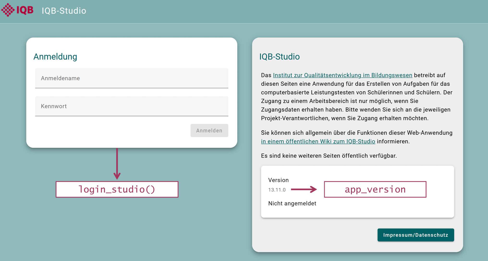
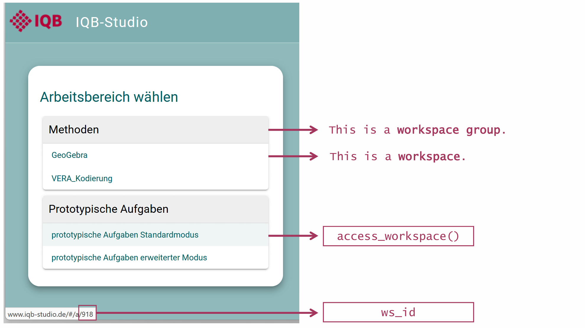
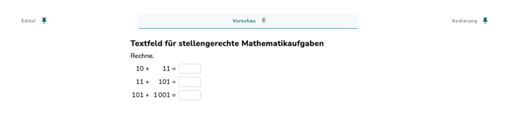
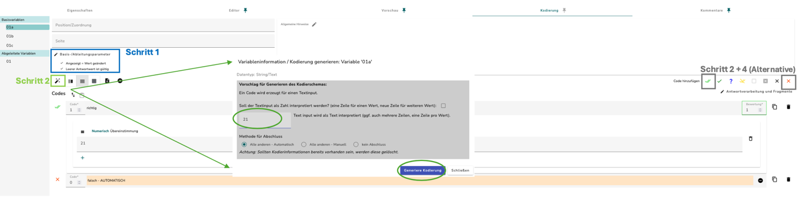
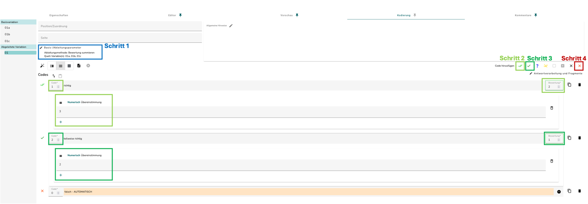

library(eatPrepTBA)
studio_version <- "21.0.0" # genaue Version der Anmeldeseite übernehmen
studio_workspace_id <- 1300 # Beispiel; eigenen Workspace eintragen
testcenter_url <- "https://iqb-testcenter2.de/" # Beispiel
testcenter_workspace_id <- 35 # Beispiel; eigenen Workspace eintragenHandout: vom Datenbezug bis zum Codebuch

Dieses Handout folgt den drei Arbeitsblöcken des Workshops: Paket und erste Kodierung, vollständige Aufbereitung bis zur Skalierung sowie Logs und Codebücher. Die Codeblöcke entsprechen den verteilten R-Skripten. Die Ergebnistabellen werden mit den synthetischen Beispieldaten berechnet; dafür ist kein IQB-Studio- oder Testcenter-Zugang erforderlich.
Materialstand 24.10.2026: eatPrepTBA 0.9.8.9042 (ea782df), eatAutoCode 0.5.0.9008. R-Grundkenntnisse werden vorausgesetzt. Die Vorbereitung beschreibt Installation, Laden der Pakete und Dateiprüfung.
| Skript | Verwendung |
|---|---|
| 00_installation.R | Pakete installieren, laden und Dateien prüfen |
| 01_datenabruf.R | Vorlage für den Abruf eigener IQB-Studio- und Testcenter-Daten |
| 02_daten_verstehen.R | JSON, gespeicherte Codes und Partial Credit an einer Rechenaufgabe nachvollziehen |
| 03_datenaufbereitung.R | Antworten kodieren, Missing-Regeln vergleichen und Skalierungsdaten exportieren |
| 04_logs.R | Lokale Logs prüfen, Zeiten und Fokusverluste auswerten |
| 05_kodiermanuale.R | Lokales Codebuch als Excel und CSV exportieren |
| 06_kodiermanuale_studio.R | Vorlage für Codebuch und Kodiermanual aus dem eigenen IQB-Studio |
Die lokalen Arbeitsskripte werden im geöffneten Projekt WSeatPrepTBA.Rproj von oben nach unten ausgeführt. In 00_installation.R die Installationszeilen nur bei Bedarf ausführen. Die beiden API-Vorlagen werden hier nur gezeigt; ihre Beispielwerte werden für eine eigene Erhebung angepasst.
0. Einstieg und Ablauf
Die Materialseite bündelt Folien, PDF-Download und Vorbereitung. Das Materialpaket enthält nur Syntaxen/, Daten/ und WSeatPrepTBA.Rproj. Vor Beginn das ZIP entpacken, die Projektdatei öffnen und Syntaxen/00_installation.R abschnittsweise ausführen.
Nach jedem der drei Arbeitsblöcke folgen ca. zehn Minuten zum Ausprobieren und eine Fragerunde: zuerst 02_daten_verstehen.R, danach 03_datenaufbereitung.R, zum Schluss 04_logs.R und 05_kodiermanuale.R. Die API-Vorlagen 01 und 06 benötigen eigene Zugänge und werden dabei nicht ausgeführt. Logs und Codebücher bilden den dritten Block.
1. Paket und erste Kodierung
Das Paket und seine Dokumentation
eatPrepTBA unterstützt Datenabruf, Kodierung, Aufbereitung und Exporte rund um IQB-Studio und Testcenter. Die Paketwebsite enthält Vignetten und Funktionshilfe; der Quellcode liegt auf GitHub.
Jedes Feedback zu eatPrepTBA und eatAutoCode ist willkommen – auch zu kleinen Unklarheiten, irritierenden Ausgaben oder umständlichen Schritten. Hinweise zur automatischen Kodierung in R können auch in den eatAutoCode-Issues gemeldet werden. Für Fehler, unerwartete Ergebnisse und Funktionswünsche steht der Issue-Bereich bereit. Eine hilfreiche Meldung nennt Paketversion, betroffenen Funktionsaufruf, erwartetes und beobachtetes Ergebnis sowie ein kleines Beispiel ohne vertrauliche Daten. Hinweise zu diesen Workshopmaterialien gehören in die Workshop-Issues.
Wie R mit den Webanwendungen kommuniziert
Die API ist die Schnittstelle von IQB-Studio beziehungsweise Testcenter für den programmgesteuerten Zugriff. eatPrepTBA verwendet httr2, um HTTP-Anfragen zu senden und Antworten zu empfangen. Die Basis-URL bezeichnet die Installation; der Endpunkt legt fest, welche Daten angefragt werden, beispielsweise die Units eines Workspaces.
Nach der Anmeldung enthält das Login-Objekt einen Sitzungstoken, den eatPrepTBA für weitere Anfragen verwendet. Die Serverantwort enthält häufig JSON. Dieser Text wird zunächst als R-Liste gelesen und anschließend zu Tabellen aufbereitet. Einige Spalten können weiterhin Listen oder JSON enthalten. Die folgenden login_*()- und get_*()-Aufrufe übernehmen diese Kommunikationsschritte; eigene httr2-Aufrufe sind dafür nicht nötig. Weitere Einzelheiten zeigt die API-Einführung.
Welche Aufgabe übernimmt welches Paket?
eatPrepTBA bezieht Antworten und Metadaten, bringt sie in ein gemeinsames Tabellenformat und bereitet sie für die Auswertung auf. Für die automatische Kodierung arbeiten drei Komponenten zusammen:
- eatPrepTBA ordnet die Antworten den Units und ihren IQB-Studio-Kodierschemata zu. Es ergänzt manuelle Codes und bereitet die Ergebnisse für die nächsten Arbeitsschritte auf.
- eatAutoCode ist die R-Schnittstelle zum IQB-Autocoder. Über
code_responses_array()übergibt es Antworten und Kodierschemata an die Kodierlogik. - @iqb/responses enthält diese Kodier- und Ableitungslogik in JavaScript/TypeScript. Sie wendet das Kodierschema an und liefert Werte (
value), Code-ID (code_id), Score (code_score) und Kodierstatus (code_status) zurück.
Der JavaScript-Code wird mit eatAutoCode installiert und lokal über V8 ausgeführt. Deshalb lässt sich mit vorbereiteten lokalen Antworten und Kodierschemata ohne IQB-Studio- oder Testcenter-Zugang kodieren.
Im Workshop nur library(eatPrepTBA) laden; eatAutoCode wird intern mitgeladen. Beide Pakete exportieren eine Funktion namens code_responses(). Ein zusätzliches library(eatAutoCode) würde die hier benötigte Funktion überdecken. Falls nötig, legt eatPrepTBA::code_responses() die gemeinte Funktion eindeutig fest.
Die Funktionsübersicht verlinkt die Hilfeseiten für Datenabruf, Kodierung, Aufbereitung und Export.
dplyr und tidyr helfen anschließend beim Verknüpfen und Umformen. Die Skripte verwenden dafür die Base-Pipe |>: Das Ergebnis einer Zeile wird an den nächsten Schritt übergeben.
Welche Daten kommen aus welcher Quelle?
Eine Kodierung benötigt die Antwort und die passende Bewertungsregel. Für einen vollständigen Skalierungsdatensatz kommt das geplante Testdesign hinzu.
| Quelle | Inhalt | Verwendung |
|---|---|---|
| IQB-Studio | Units, Variablen, Kodierschemata und Item-Verknüpfungen | Antworten bewerten und Auswertungsitems zuordnen |
| Testcenter: Antworten | Gespeicherte Antworten je Person und Unit | Tatsächlich bearbeitete Aufgaben aufbereiten |
| Testcenter: Design | Testpersonen- und Booklet-Informationen | Vorgesehene Aufgaben und ihre Reihenfolge ergänzen |
| Testcenter: Logs | Ereignisse während der Durchführung | Zeiten und Fokusverluste nachvollziehen |
Die eingesetzten Units und ihre Kodierregeln müssen zur Durchführung passen. Ein später geändertes IQB-Studio-Kodierschema kann andere Regeln enthalten als das ursprüngliche Testmaterial.
| Begriff oder Kennung | Bedeutung im Workflow |
|---|---|
Unit / unit_key |
Aufgabeneinheit, die mehrere Variablen enthalten kann |
unit_alias |
Referenz auf die Unit innerhalb eines Booklets |
Variable / variable_id |
Antwortvariable oder daraus abgeleitete Variable |
Item / item_id |
Verknüpftes Auswertungsitem aus den IQB-Studio-Metadaten |
group_id, login_name, login_code |
Zusammengesetzte Personenkennung im Beispiel |
booklet_id |
Testheft mit den vorgesehenen Units |
code_id / code_score |
Antwortkategorie / zugeordnete Punktzahl |
code_status / code_type |
Softwarestatus / zugeordnete Code- oder Missing-Art |
Eine Variable ist nicht automatisch ein Item. Die Rechenaufgabe weiter unten zeigt drei Antwortvariablen und ein daraus abgeleitetes Auswertungsitem. Wiederholte Durchführungen benötigen passende Zeitpunktschlüssel oder getrennte Aufbereitungen.
Wie die Daten von der Anwendung nach R kommen
Mit dem folgenden Abschnitt beginnt der Datenabruf. Eine API ist die Schnittstelle, über die R Daten aus IQB-Studio oder Testcenter anfordert. Nach der Anmeldung wird ein Workspace ausgewählt und beispielsweise dessen Antwortbestand abgerufen. Die Serverantwort enthält häufig JSON. eatPrepTBA übernimmt die Anfrage und stellt das Ergebnis als R-Objekt bereit.
Ein RDS speichert ein R-Objekt einschließlich seiner Struktur. Ein CSV speichert eine Tabelle; einzelne Zellen können wiederum JSON-Text enthalten. Deshalb ist ein Antwort-CSV nach dem Einlesen noch nicht automatisch eine Tabelle mit einer Zeile pro Variable.
Für Antworten und Logs gibt es zwei alternative Einstiege: get_responses() beziehungsweise get_logs() liefert direkt ein R-Objekt aus dem Workspace. Wer bereits eine heruntergeladene Exportdatei besitzt, liest diese mit read_responses() beziehungsweise read_logs() ein. Ein zusätzlicher Download ist nach einem erfolgreichen direkten Abruf nicht erforderlich. saveRDS() sichert das R-Objekt anschließend für die weitere lokale Arbeit.
Version und Workspace-IDs ablesen
Die Version steht auf der IQB-Studio-Anmeldeseite. Nach Auswahl eines Workspaces steht seine ID in der Adresse, beispielsweise …/#/a/918. Die eatPrepTBA-Vignette erläutert diese Zuordnung.


Im Testcenter den Workspace in der Administration öffnen. Die Zahl nach /admin/ ist die Workspace-ID; die Beispieladresse https://iqb-testcenter2.de/#/admin/35/files bezeichnet Workspace 35. IQB-Studio und Testcenter haben voneinander unabhängige Workspace-IDs.
Vorlage: Daten für eine eigene Erhebung beziehen
Die folgenden Blöcke stammen aus Syntaxen/01_datenabruf.R und benötigen eigene Zugänge. Die lokalen Beispiele verwenden synthetische Daten, deren Struktur diesen Abrufen nachempfunden ist. Zunächst Version und Workspace-IDs prüfen; bei abweichender Installation oder Durchführung die jeweiligen Aufrufe anpassen. Die exakte IQB-Studio-Version steht auf der Anmeldeseite; ein Beta-Zusatz gehört dazu.
Der Modus wird in der Testpersonen-XML am Element Login festgelegt; beim Einlesen heißt die Spalte login_mode. get_design() filtert standardmäßig auf run-hot-return. get_responses() und get_logs() besitzen diesen Modusfilter nicht; über groups können Gruppen ausgewählt werden. Deshalb werden die bezogenen Antworten später mit dem Design abgeglichen. Deshalb genügt im Beispiel get_design(testcenter, units = units). Bei einem anderen Modus wird mode ausdrücklich gesetzt. Der Filter betrifft Angaben aus der Testpersonen-XML, nicht die Anmeldung des Administrationskontos. run-hot-return bedeutet: Antworten und Logs speichern, Zeit- und Navigationsbeschränkungen anwenden und bei erneuter Anmeldung die bisherige Testsitzung fortsetzen. Die Testcenter-Dokumentation erläutert die verfügbaren Modi.
Vor dem Abruf einen Ordner für die Daten anlegen:
dir.create("Daten/EigeneDaten", showWarnings = FALSE)Die Anmeldung fragt Zugangsdaten ab. Danach wird der IQB-Studio-Workspace ausgewählt. metadata = TRUE bereitet die Metadaten einschließlich der Item-Verknüpfungen auf. unit_definition = TRUE lädt zusätzlich die technische Aufgabendefinition: Seiten, Abschnitte, Texte und Medien sowie Antwortfelder. Die Definition liegt als JSON in unit_definition; daraus werden Positionen für die weitere Aufbereitung abgeleitet.
studio_login <- login_studio(app_version = studio_version, keyring = TRUE)
studio <- access_workspace(studio_login, ws_id = studio_workspace_id)
units <- get_units(studio, metadata = TRUE, unit_definition = TRUE)
saveRDS(units, "Daten/EigeneDaten/units.rds")get_units() liefert das ursprüngliche Kodierschema bereits in coding_scheme. add_coding_scheme() bereitet dieses vorhandene Kodierschema für R auf und ergänzt die Listenspalte unit_codes; dafür ist kein weiterer Serverabruf nötig. Der explizite Aufruf macht das Kodierschema sofort einsehbar. code_responses(prepare = TRUE) und get_design(units = ...) übernehmen die Aufbereitung bei Bedarf auch selbst.
Ohne base_url verwendet login_studio() die Installation https://www.iqb-studio.de/. keyring = TRUE speichert die Zugangsdaten im Passwortspeicher des Betriebssystems und verwendet sie beim nächsten Aufruf erneut.
| Meldung oder Situation | Vorgehen |
|---|---|
| HTTP 401 Unauthorized | Installation und Zugangsdaten prüfen. Mit keyring = FALSE einmal frisch eingeben. |
| Gespeicherte Angaben sind falsch oder veraltet | Einmal keyring = TRUE, change_key = TRUE verwenden. |
| HTTP 521 | Die genaue Version der IQB-Studio-Anmeldeseite bei app_version eintragen, einschließlich Beta-Zusatz. |
Die auskommentierten Aufrufe zur Fehlerbehebung stehen in Syntaxen/01_datenabruf.R. View(units) öffnet die vollständige Tabelle in RStudio; verschachtelte Kodierinformationen sind über units$unit_codes[[1]] zugänglich.
Kodierschemata im Workspace prüfen
get_coding_report() ruft den Prüfbericht zu den Kodierschemata aus IQB-Studio ab. Geprüft werden die Regeln und Ableitungen, nicht die Antworten einer Durchführung. Dafür wird der angemeldete Workspace benötigt.
coding_report <- get_coding_report(studio)
head(coding_report)
coding_report$validation_problems[[1]]
saveRDS(coding_report, "Daten/EigeneDaten/coding_report.rds")Im Workshop wird stattdessen ein ausdrücklich synthetischer Prüfbericht eingelesen. Die Rechenaufgabe ist korrekt; die separate Unit DEMO_PRUEFFALL enthält absichtlich eine Ableitung mit fehlender Quellvariable.
coding_report_demo <- readRDS("Daten/demo-coding-report.rds")
select(coding_report_demo, unit_key, variable_id, validation, coding_type)
coding_report_demo$validation_problems[[2]]# A tibble: 2 × 4
unit_key variable_id validation coding_type
<chr> <chr> <chr> <chr>
1 PC_RECHNEN 01 OK automatisch
2 DEMO_PRUEFFALL SUMME Fehler automatisch# A tibble: 1 × 3
type breaking code
<chr> <lgl> <chr>
1 SOURCE_MISSING TRUE <NA> SOURCE_MISSING benennt die fehlende Quellvariable; breaking = TRUE kennzeichnet ein blockierendes Problem. Solche Hinweise sollten vor der Kodierung geklärt werden.
Unit- und Item-Metadaten aufbereiten
add_metadata() bereitet beschreibende Angaben wie Fach, Klassenstufe oder Kompetenz auf. get_units(metadata = TRUE) liefert dazu unit_profiles, items_profiles, items_list und die Workspace-Einstellungen. add_metadata() verwendet diese Informationen und die zugehörigen Profile; es erzeugt unit_metadata und item_metadata als verschachtelte Tabellen.
units_meta <- add_metadata(units)
head(units_meta)
units_meta$unit_metadata[[1]]
units_meta$item_metadata[[1]]
saveRDS(units_meta, "Daten/EigeneDaten/units_metadata.rds")Die konkreten Felder hängen von den Profilen der Studie ab. Profildefinitionen und Vokabulare werden bei Bedarf über ihre URLs nachgeladen; Internetzugang kann daher erforderlich sein. Das ursprüngliche units verwenden; vorgelagertes add_coding_scheme() ist möglich.
Für den Workshop liegt ein synthetischer, bereits aufbereiteter Auszug vor. Die Datei wird eingelesen; add_metadata() wird damit nicht ausgeführt.
metadata_demo <- readRDS("Daten/demo-metadata-prepared.rds")
select(metadata_demo, unit_key, unit_metadata, item_metadata)
metadata_demo$unit_metadata[[1]]
metadata_demo$item_metadata[[1]]# A tibble: 1 × 3
unit_key unit_metadata item_metadata
<chr> <list> <list>
1 PC_RECHNEN <tibble [1 × 2]> <tibble [1 × 5]># A tibble: 1 × 2
Fach Klassenstufe
<chr> <chr>
1 Mathematik 4 # A tibble: 1 × 5
item_no variable_id variable_ref item_id Kompetenz
<int> <chr> <chr> <chr> <chr>
1 1 01 01 RECHNEN_01 Zahlen und OperationenDie weiteren Spalten der Unit-Tabelle
Die äußere Tabelle units bündelt mehrere Arten von Informationen. Der genaue Umfang hängt vom Abruf und vom Workspace ab; names(units) zeigt die tatsächlich vorhandenen Spalten.
| Gruppe | Spalten im verwendeten Paketstand |
|---|---|
| Workspace und Gruppe | ws_id, ws_label, wsg_id, wsg_label |
| Unit | unit_id, unit_key, unit_label, group_name, state_id, description |
| Ressourcen | unit_variables, coding_scheme, player, editor, schemer, scheme_type |
| Änderungsstände | last_change_definition, last_change_definition_user, last_change_scheme, last_change_scheme_user, last_change_metadata, last_change_metadata_user |
| Metadaten | Ohne Aufbereitung unit_metadata; mit metadata = TRUE stattdessen unit_profiles, items_list, items_profiles |
| Aufgabendefinition | Mit unit_definition = TRUE: unit_definition, variable_pages; im geprüften Stand zusätzlich das interne Abruffeld batch |
| Aufbereitetes Kodierschema | Nach add_coding_scheme(): unit_codes |
unit_variables beschreibt die Antwortvariablen, items_list ihre Item-Verknüpfungen und variable_pages ihre Positionen innerhalb der Unit. Das lokale Beispiel weiter unten zeigt diese verschachtelten Tabellen in R; es bildet nicht sämtliche optionalen Serverfelder nach.
Nun den Testcenter-Workspace der Durchführung auswählen:
testcenter_login <- login_testcenter(base_url = testcenter_url)
testcenter <- access_workspace(testcenter_login,
ws_id = testcenter_workspace_id)Für die Antworten gibt es zwei Wege: API-Abruf oder bereits vorhandener CSV-Export. Eine Variante wählen. Beide liefern die gespeicherten Antwortinhalte für die anschließende Autokodierung. get_responses() und read_responses() haben in der verwendeten Paketfassung kein Argument prepare.
responses <- get_responses(testcenter)
saveRDS(responses, "Daten/EigeneDaten/responses.rds")
# Alternative, wenn bereits ein Antwortexport vorliegt:
# responses <- read_responses("Daten/EigeneDaten/Responses.csv")
# saveRDS(responses, "Daten/EigeneDaten/responses.rds")Das vollständige Design beschreibt, welche Variablen für welche Person vorgesehen waren. Dazu müssen im Testcenter-Workspace die Testpersonen-XML und die zugehörigen Booklet-XMLs der Erhebung liegen. Das Objekt units muss alle relevanten Units enthalten. Ein Antwort-CSV allein liefert diese Informationen nicht.
design <- get_design(testcenter, units = units)
saveRDS(design, "Daten/EigeneDaten/design.rds")Logs lassen sich ebenfalls abrufen und lokal zwischenspeichern:
logs <- get_logs(testcenter)
saveRDS(logs, "Daten/EigeneDaten/logs.rds")Das Abrufprotokoll hält Herkunft und Version fest. Nach einem IQB-Studio-Update erneut anmelden und das Workspace-Objekt neu erstellen.
retrieval_info <- c(
paste("Abruf:", format(Sys.time(), tz = "Europe/Berlin", usetz = TRUE)),
paste("eatPrepTBA:", packageVersion("eatPrepTBA")),
paste("IQB-Studio:", studio_login@base_url,
"Version:", studio_login@app_version),
paste("IQB-Studio-Workspace:", studio_workspace_id),
paste("Testcenter:", testcenter_url),
paste("Testcenter-Workspace:", testcenter_workspace_id),
paste("Testdurchführungsmodus im Design:",
paste(unique(design$login_mode), collapse = ", ")))
writeLines(retrieval_info, "Daten/EigeneDaten/abruf.txt", useBytes = TRUE)
capture.output(sessionInfo(), file = "Daten/EigeneDaten/session-info.txt")Die gespeicherten RDS-Dateien lassen sich später ohne erneuten Serverabruf mit readRDS() laden. In Syntaxen/03_datenaufbereitung.R dafür die drei Importzeilen durch die entsprechenden Pfade unter Daten/EigeneDaten/ ersetzen. Bei Verbindungsproblemen zuerst Serveradresse, Version, Workspace-ID und Zugriffsrechte prüfen.
Eine Rechenaufgabe: von der IQB-Studio-Oberfläche zu R
Die folgenden Screenshots stammen aus dem IQB-Tutorial zu Partial Credit. Die lokale Mini-Demo bildet die dort gezeigten Rechenaufgaben und zentralen Kodierregeln nach. Ihre vier Antwortverläufe sind erfunden. Zusätzliche Regeln für Tausender-Schreibweisen bleiben hier ausgespart.

| Ebene | Im Beispiel |
|---|---|
| Unit | Die gesamte Rechenaufgabe |
| Basisvariablen | 01a, 01b, 01c: drei eingegebene Antworten |
| Abgeleitete Variable | 01: Summe der Punkte aus den drei Basisvariablen |
| Auswertungsitem | RECHNEN_01: verknüpft mit der abgeleiteten Variable 01 |
Die richtigen Antworten lauten 21, 112 und 1102. Die führende Null in den Variablennamen gehört zur Kennung. Die Kennungen bleiben daher Zeichenketten.
library(eatPrepTBA) # eatAutoCode nicht separat laden.
library(dplyr)
library(tidyr)
pc_units <- readRDS("Daten/demo-pc-units.rds")
pc_responses <- read_responses("Daten/demo-pc-responses.csv")
select(pc_units, unit_key, unit_label)
select(pc_responses, login_name, unit_key, response_progress)coding_scheme enthält die JSON-Regeln. unit_variables und items_list sind verschachtelte Tabellen; names() zeigt alle verfügbaren Spalten.
pc_units |>
select(unit_key, unit_label, coding_scheme, unit_variables, items_list) |>
print(width = 90)
names(pc_units)# A tibble: 1 × 5
unit_key unit_label
<chr> <chr>
1 PC_RECHNEN Rechenpaeckchen
coding_scheme unit_variables items_list
<chr> <list> <list>
1 "{\"variableCodings\":[{\"id\":\"01a\",\"alias\":\"… <tibble> <tibble> [1] "ws_id" "ws_label" "unit_id" "unit_key"
[5] "unit_label" "coding_scheme" "unit_variables" "items_list"
[9] "unit_codes" [[1]] öffnet die Tabelle für die erste Unit innerhalb einer Listenspalte. Die Variablenliste enthält die Antwortfelder, die Item-Verknüpfung bestimmt die Auswertungsvariable.
print(pc_units$unit_variables[[1]] |> select(variable_id, variable_type))
print(pc_units$items_list[[1]] |> select(variable_id, item_id))# A tibble: 3 × 2
variable_id variable_type
<chr> <chr>
1 01a string
2 01b string
3 01c string # A tibble: 1 × 2
variable_id item_id
<chr> <chr>
1 01 RECHNEN_01Antworten und Kodierungen auseinanderhalten
prepare_responses() entpackt die Spalte responses: gespeicherte Eingaben und Bearbeitungsstatus. prepare_coded() entpackt dagegen coded: bereits gespeicherte Codes, Scores und Kodierstatus. Beide Funktionen lesen vorhandene Inhalte; sie berechnen keine neue Bewertung. Dafür ist code_responses() mit Antworten und Kodierschema zuständig.
Ein Export kann beide Spalten enthalten. Der Unterschied hängt vom Inhalt der Datei ab, nicht davon, ob sie aus StarS oder einer anderen Durchführung stammt.
JSON in einer Tabellenzelle lesen
In pc_responses steht eine Zeile für eine Person und eine Unit. Die Spalte responses enthält die Antworten als JSON-Text. In diesem Text benennt id die Variable, value ihren Wert und status ihren Bearbeitungsstatus. An den Anführungszeichen ist zu sehen, dass die eingegebenen Zahlen hier als Text gespeichert sind.
cat(jsonlite::prettify(pc_responses$responses[[1]]))[
{
"id": "01a",
"value": "21",
"status": "VALUE_CHANGED"
},
{
"id": "01b",
"value": "112",
"status": "VALUE_CHANGED"
},
{
"id": "01c",
"value": "1102",
"status": "VALUE_CHANGED"
}
]prepare_responses() entpackt diesen Text. Es vergibt dabei noch keine Codes oder Punkte. value bleibt zunächst eine Listenspalte, weil ein Antwortfeld auch mehrere Werte enthalten kann.
raw_values <- prepare_responses(pc_responses)
select(raw_values, login_name, variable_id, value, variable_status)# A tibble: 3 × 4
login_name variable_id value variable_status
<chr> <chr> <list> <chr>
1 D1 01a <list [1]> VALUE_CHANGED
2 D1 01b <list [1]> VALUE_CHANGED
3 D1 01c <list [1]> VALUE_CHANGED Partial Credit: Basisvariablen und Summenvariable kodieren
Jede richtige Basisantwort erhält einen Punkt. Die abgeleitete Variable 01 summiert diese drei Punkte. Ihr eigenes Kodierschema legt anschließend die Punkte für das Auswertungsitem fest.


| Summe der Basispunkte | Code der Variable 01 |
Score des Items |
|---|---|---|
| 3 | 1 | 2 |
| 2 | 2 | 1 |
| 0 oder 1 | 0 | 0 |
Code und Score sind unterschiedliche Angaben: Code 1 steht hier für zwei Punkte, Code 2 für einen Punkt. Im R-Objekt sind die Kodierinformationen verschachtelt. Die folgenden Schritte machen daraus eine Tabelle.
pc_rules <- pc_units |>
select(unit_key, unit_codes) |>
unnest(unit_codes) |>
unnest(variable_codes) |>
select(variable_id, variable_source_type, code_id, code_score)
pc_rules01a wird direkt bewertet. Die abgeleitete Variable 01 bildet daraus 0, 1 oder 2 Punkte; Code und Score unterscheiden sich.
pc_rules |>
filter(variable_id %in% c("01a", "01")) |>
print()# A tibble: 5 × 4
variable_id variable_source_type code_id code_score
<chr> <chr> <int> <dbl>
1 01a BASE 1 1
2 01a BASE 0 0
3 01 SUM_SCORE 1 2
4 01 SUM_SCORE 2 1
5 01 SUM_SCORE 0 0# A tibble: 9 × 4
variable_id variable_source_type code_id code_score
<chr> <chr> <int> <dbl>
1 01a BASE 1 1
2 01a BASE 0 0
3 01b BASE 1 1
4 01b BASE 0 0
5 01c BASE 11 1
6 01c BASE 0 0
7 01 SUM_SCORE 1 2
8 01 SUM_SCORE 2 1
9 01 SUM_SCORE 0 0code_responses() erhält die ursprünglichen Antworten und die Units mit ihren Regeln. Über eatAutoCode werden erst die Basisvariablen kodiert und danach die abhängige Variable berechnet und kodiert.
Das Argument prepare betrifft die Form des bereits neu kodierten Ergebnisses. Mit prepare = TRUE wird die Listenspalte value entpackt und das Ergebnis um Informationen aus dem Kodierschema wie variable_source_type und code_type ergänzt. Diese Form verwenden die folgenden Aufbereitungsschritte. Mit prepare = FALSE liegen ebenfalls neue Codes, Scores und Status vor; value bleibt jedoch eine Listenspalte. Der Schalter entscheidet also nicht darüber, ob kodiert wird.
prepare_responses() hat eine andere Aufgabe: Es entpackt gespeichertes Antwort-JSON und vergibt dabei keine neuen Codes oder Scores.
pc_coded <- code_responses(pc_responses, pc_units, prepare = TRUE)
pc_coded |>
filter(login_name == "D1") |>
select(variable_id, value, code_id, code_score, code_status)# A tibble: 4 × 5
variable_id value code_id code_score code_status
<chr> <chr> <int> <int> <chr>
1 01a 21 1 1 CODING_COMPLETE
2 01b 112 1 1 CODING_COMPLETE
3 01c 1102 11 1 CODING_COMPLETE
4 01 3 1 2 CODING_COMPLETEDie Kodierung lässt sich direkt im Rechenbeispiel prüfen. Beide Ausdrücke sollten TRUE ergeben:
nrow(pc_coded) == 16 # sollte TRUE sein: 4 Personen mit je 4 Variablen
all(pc_coded$code_status == "CODING_COMPLETE") # sollte TRUE sein[1] TRUE[1] TRUEadd_item_id() ergänzt die Verknüpfung aus den Unit-Metadaten. Hier ist nur 01 ein Auswertungsitem; die drei Basisvariablen bleiben Hilfsvariablen.
pc_items <- add_item_id(pc_coded, pc_units)
pc_items <- filter(pc_items, !is.na(item_id))
select(pc_items, login_name, item_id, value, code_id, code_score)# A tibble: 4 × 5
login_name item_id value code_id code_score
<chr> <chr> <chr> <int> <int>
1 D1 RECHNEN_01 3 1 2
2 D2 RECHNEN_01 2 2 1
3 D3 RECHNEN_01 1 0 0
4 D4 RECHNEN_01 0 0 0Wenn Codes bereits gespeichert sind: zum Beispiel StarS
Bei einem Export mit bereits gespeicherten Kodierungen, etwa aus StarS, kann prepare_coded() die Codes und Scores direkt entpacken. Die Funktion benötigt dafür kein Kodierschema und kodiert die Antworten nicht neu. Das ist ein anderer Ausgangspunkt als die automatische Kodierung einer regulären Studie mit passenden IQB-Studio-Units.
Die folgende Datei bildet diesen Fall mit denselben vier erfundenen Antwortverläufen nach. Sie ist kein Originalexport aus StarS.
pc_stored <- read_responses("Daten/demo-stored-codes.csv")
stored_codes <- prepare_coded(pc_stored)
select(stored_codes, login_name, variable_id, value, code_id, code_score)# A tibble: 4 × 5
login_name variable_id value code_id code_score
<chr> <chr> <chr> <int> <int>
1 D1 01 3 1 2
2 D2 01 2 2 1
3 D3 01 1 0 0
4 D4 01 0 0 0Welche Variablen als Items gelten, welche Missing-Regeln anzuwenden sind und welche Aufgaben vorgesehen waren, muss weiterhin zur Studie geklärt werden. prepare_coded() ergänzt diese Informationen nicht. Die entpackte Tabelle ist deshalb noch kein vollständiger Skalierungsdatensatz.
2. Von Antworten und Metadaten zum Skalierungsdatensatz
2.1 Lokal starten und Daten abgleichen
Der vollständige Aufbereitungsweg verwendet eine separate synthetische Lesestudie: 40 vorgesehene Personen, sechs Units und acht Auswertungsitems in zwei Booklets. Sie enthält geschlossene, abgeleitete und manuell kodierte Antworten. Die zuvor gezeigten IQB-Studio-Screenshots gehören zur Rechenaufgabe, nicht zu dieser Lesestudie.
Das Skript legt Daten/Zwischenstaende/ und Daten/Ergebnisse/ beim Ausführen an. Diese Ordner sind im Download zunächst nicht enthalten. Ergebnis-CSV werden mit write.csv2() gespeichert: Semikolon als Trennzeichen, Dezimalkomma und keine zusätzliche Zeilennummernspalte. Die UTF-16LE-Kodierung erhält Umlaute beim direkten Öffnen in Excel.
library(eatPrepTBA) # lädt eatAutoCode mit; nicht separat laden
library(dplyr)
library(tidyr)
person_columns <- c("group_id", "login_name", "login_code")
dir.create("Daten/Ergebnisse", showWarnings = FALSE)
dir.create("Daten/Zwischenstaende", showWarnings = FALSE)units.rds und design.rds sind synthetische Objekte im erwarteten Paketformat. Responses.csv bildet das Testcenter-Exportformat mit verschachtelten Antwort-JSONs nach. Sie gehören zusammen und werden als gemeinsame Datenbasis eingelesen.
units <- readRDS("Daten/units.rds")
design <- readRDS("Daten/design.rds")
responses <- read_responses("Daten/Responses.csv")
# Nach einem API-Abruf alternativ:
# responses <- readRDS("Daten/EigeneDaten/responses.rds")
count(responses, booklet_id)
saveRDS(responses, "Daten/Zwischenstaende/01_responses.rds")Eine Zeile gehört zu einer Person und Unit. Mehrere Variablen stecken noch im Antwort-JSON.
responses |>
select(login_name, booklet_id, unit_key, response_progress) |>
head(4) |> print()# A tibble: 4 × 4
login_name booklet_id unit_key response_progress
<chr> <chr> <chr> <chr>
1 P001 B1 U1 some
2 P001 B1 U2 some
3 P001 B1 U3 some
4 P001 B1 U4 some Die 193 Antwortzeilen stehen für gespeicherte Person–Unit-Kombinationen. Die 340 Designzeilen stehen für vorgesehene Person–Variable-Kombinationen. Die folgenden Ausschnitte zeigen die Units, ihre Reihenfolge in den Booklets und das Design:
print(units |> select(unit_key, unit_label)) # sollte 6 Units zeigen
print(readr::read_csv("Daten/booklets.csv", show_col_types = FALSE) |>
select(booklet_id, unit_booklet_no, unit_key) |> head(5))# A tibble: 6 × 2
unit_key unit_label
<chr> <chr>
1 U1 Bibliothek
2 U2 Aushang
3 U3 Zwei Textbelege
4 U4 Begruendung
5 U5 Busfahrplan
6 U6 Museum # A tibble: 5 × 3
booklet_id unit_booklet_no unit_key
<chr> <dbl> <chr>
1 B1 1 U1
2 B1 2 U2
3 B1 3 U3
4 B1 4 U4
5 B1 5 U5 print(design |> select(login_name, booklet_id, unit_key, variable_id) |> head(6))# A tibble: 6 × 4
login_name booklet_id unit_key variable_id
<chr> <chr> <chr> <chr>
1 P001 B1 U1 Q1
2 P001 B1 U1 Q2
3 P001 B1 U2 Q1
4 P001 B1 U3 Q1
5 P001 B1 U3 Q2
6 P001 B1 U3 TOTAL Bei U3 sind Q1 und Q2 die Basisvariablen; TOTAL wird daraus abgeleitet und als Item ausgewertet. Die Unit- und Variablenkennungen verbinden das Design mit den Antworten und Kodierregeln.
Fehlende Antworten auf vorgesehene Aufgaben sind normal und können in großen Mengen vorkommen. missing_rows zählt Designvariablen aus Units ohne passende gespeicherte Antwortzeile; diese Fälle ergänzt später complete_design(). Eine Einzelprüfung aller fehlenden Antworten ist hier nicht nötig.
Davon zu unterscheiden sind tatsächlich gespeicherte Antworten, denen eine passende Unit (unknown_units) oder Designzuordnung (outside_design) fehlt. Nur dieser umgekehrte Fall deutet darauf hin, dass Datenbestände oder Auswahl nicht zusammenpassen. anti_join() macht die beiden Richtungen unterscheidbar; die folgende Übersicht zeigt zunächst nur ihre Anzahlen.
response_keys <- c("group_id", "login_name", "login_code",
"booklet_id", "unit_key")
unknown_units <- anti_join(responses, units, by = "unit_key")
outside_design <- anti_join(responses, design, by = response_keys)
missing_rows <- anti_join(design, responses, by = response_keys)tibble(
Fall = c("Antwort ohne Unit", "Antwort außerhalb Design",
"Designzeile ohne Antwort"),
Anzahl = c(nrow(unknown_units), nrow(outside_design), nrow(missing_rows))
) |> print()# A tibble: 3 × 2
Fall Anzahl
<chr> <int>
1 Antwort ohne Unit 0
2 Antwort außerhalb Design 0
3 Designzeile ohne Antwort 112.2 Automatisch und manuell kodieren
code_responses() wendet die Kodierschemata auf die ursprünglichen Antwortdaten an. Seine Argumente steuern die Aufbereitung und die Einbindung manueller Codes:
| Argument | Bedeutung |
|---|---|
responses |
Ursprüngliche Antwortpakete aus get_responses() oder read_responses(), ohne vorheriges Entpacken |
units |
Passende Unit-Daten mit coding_scheme und unit_variables |
prepare = FALSE |
Bei TRUE Werte entpacken und Metadaten wie code_type ergänzen; auch bei FALSE werden die Antworten kodiert |
overwrite = FALSE |
Vorhandene unit_codes wiederverwenden; bei TRUE erneut aus dem Kodierschema aufbereiten |
codes_manual = NULL |
Optionale Tabelle mit Personenkennung, booklet_id, unit_key, variable_id und code_id; Scores stammen aus dem Kodierschema |
missings = NULL |
Optionale Tabelle mit code_id, code_status, code_score, code_type für das Einsetzen manueller Missing-Codes |
Die folgende Aufbereitung verwendet prepare = TRUE. Die endgültige Missing-Einordnung folgt erst mit complete_design().
coded_auto <- code_responses(responses, units, prepare = TRUE)
count(coded_auto, unit_key, code_status)
saveRDS(coded_auto, "Daten/Zwischenstaende/02_coded_auto.rds")Bei U3 ist TOTAL bereits abgeleitet; U4/TEXT wartet noch auf die manuelle Kodierung.
coded_auto |>
filter(login_name == "P001", unit_key %in% c("U3", "U4")) |>
select(unit_key, variable_id, code_id, code_score, code_status) |>
head(4) |> print()# A tibble: 4 × 5
unit_key variable_id code_id code_score code_status
<chr> <chr> <int> <dbl> <chr>
1 U3 Q1 0 0 CODING_COMPLETE
2 U3 Q2 0 0 CODING_COMPLETE
3 U3 TOTAL 0 0 CODING_COMPLETE
4 U4 TEXT NA NA CODING_INCOMPLETE| Status | Was jetzt zu tun ist |
|---|---|
CODING_COMPLETE |
Kodierung der Variable ist abgeschlossen |
CODING_INCOMPLETE, DERIVE_PENDING |
Fehlende Codes oder benötigte Ausgangsvariablen prüfen |
UNSET, CODING_ERROR, DERIVE_ERROR |
Antworten und Kodierschema prüfen, Ursache beheben |
DISPLAYED, PARTLY_DISPLAYED, NOT_REACHED, INVALID |
Erwartbare Missing-Status; auffällige Häufungen anhand der Durchführung prüfen |
Die Prüfung richtet sich auf die späteren Itemvariablen und die für ihre Berechnung benötigten Ausgangsvariablen. Die abschließende Missing-Zuweisung folgt erst mit complete_design().
In der Mini-Studie benötigt U4 eine manuelle Bewertung. Die Tabelle der manuellen Codes enthält die Personenkennung, booklet_id, unit_key, variable_id und code_id: genau einen Code pro zu kodierender Antwort. Kennungen werden als Text eingelesen, code_id als Ganzzahl.
codes_manual <- readr::read_csv("Daten/codes_manual.csv",
col_types = readr::cols(.default = "c", code_id = "i"))Die Personen- und Variablenschlüssel ordnen die manuelle Kategorie der ursprünglichen Antwort zu. Die Punktzahl kommt aus dem Kodierschema.
head(codes_manual, 3) |> print(width = 90) # sollte 7 Spalten zeigen# A tibble: 3 × 7
group_id login_name login_code booklet_id unit_key variable_id code_id
<chr> <chr> <chr> <chr> <chr> <chr> <int>
1 WS P001 SYN001 B1 U4 TEXT 1
2 WS P002 SYN002 B1 U4 TEXT 2
3 WS P003 SYN003 B1 U4 TEXT 0Erneut die ursprünglichen responses übergeben. So werden manuelle Codes eingefügt und davon abhängige Variablen neu berechnet. Ohne manuelle Kodierung genügt anstelle dieses Abschnitts coded <- coded_auto.
coded <- code_responses(responses, units, prepare = TRUE,
codes_manual = codes_manual)
count(coded, code_status, code_type)
saveRDS(coded, "Daten/Zwischenstaende/03_coded.rds")Die zuvor offene Variable hat nun einen Code und den zugehörigen Score.
coded |>
filter(unit_key == "U4", variable_id == "TEXT") |>
select(login_name, variable_id, code_id, code_score, code_status) |>
head(4) |> print()# A tibble: 4 × 5
login_name variable_id code_id code_score code_status
<chr> <chr> <int> <dbl> <chr>
1 P001 TEXT 1 0.5 CODING_COMPLETE
2 P002 TEXT 2 1 CODING_COMPLETE
3 P003 TEXT 0 0 CODING_COMPLETE
4 P004 TEXT 1 0.5 CODING_COMPLETEDie synthetischen Codes sind bereits vorbereitet. Für eigene Erhebungen werden die aufgabenspezifischen Regeln und Antwortbeispiele vor der manuellen Kodierung vereinbart.
2.3 Design vervollständigen und Missing-Regeln festlegen
complete_design() ergänzt die im Design vorgesehenen fehlenden Zeilen. Die Reihenfolge der relevanten Variablen und Units hilft dabei, innere Lücken von nicht erreichten Aufgaben am Ende des Testabschnitts zu unterscheiden.
| Argument | Bedeutung |
|---|---|
coded |
Kodierte Antworten aus code_responses(..., prepare = TRUE) |
units |
Unit-Daten mit Kodierschema und Positionen; beim Abruf unit_definition = TRUE setzen |
design |
Vorgesehene Person–Booklet–Unit–Variablen-Kombinationen samt Reihenfolge |
identifiers |
Personenkennung; Standard: group_id, login_name, login_code |
overwrite = FALSE |
Vorhandene unit_codes verwenden; bei TRUE erneut aus dem Kodierschema aufbereiten |
missings = NULL |
Optionale Tabelle mit code_id, code_status, code_score, code_type; legt die Codes und Scores der Missing-Arten fest |
recode_omissions_to_not_reached = FALSE |
Bei TRUE abschließende Auslassungen innerhalb eines Testlets als nicht erreicht behandeln |
preserve_not_reached = FALSE |
Bei TRUE bestehende oder beim Ergänzen erkannte Not-reached-Fälle beibehalten, auch wenn später eine Bearbeitung folgt |
Die beiden letzten Optionen sind unabhängig. Im ersten Durchlauf gelten die Paketvoreinstellungen; anschließend folgt ein Vergleich mit beiden Optionen auf TRUE.
design_coded <- complete_design(coded, units, design,
recode_omissions_to_not_reached = FALSE, preserve_not_reached = FALSE)
count(design_coded, id_used, code_type)
saveRDS(design_coded, "Daten/Zwischenstaende/04_design_coded.rds")P002/U2 fehlt vor später bearbeiteten Units; P003/U5 fehlt am Ende des Testlets. Aus der Position entstehen verschiedene Missing-Arten.
design_coded |>
filter((login_name == "P002" & unit_key == "U2") |
(login_name == "P003" & unit_key == "U5")) |>
select(login_name, unit_key, variable_id, code_type, code_score) |>
print()# A tibble: 3 × 5
login_name unit_key variable_id code_type code_score
<chr> <chr> <chr> <chr> <dbl>
1 P002 U2 Q1 MISSING_BY_OMISSION 0
2 P003 U5 Q1 MISSING_NOT_REACHED NA
3 P003 U5 Q2 MISSING_NOT_REACHED NADer Ausgangsworkflow verwendet ausdrücklich die Paketvoreinstellungen. Die endgültige Missing-Art steht in code_type; code_status bleibt erhalten, auch wenn neu ergänzte Zeilen dort NA haben.
| Code- oder Missing-Art | Standardcode | Score nach complete_design() |
|---|---|---|
NO_CODING |
−93 | NA |
MISSING_NOT_REACHED |
−96 | NA |
MISSING_CODING_IMPOSSIBLE |
−97 | NA |
MISSING_INVALID_RESPONSE |
−98 | 0 |
MISSING_BY_OMISSION |
−99 | 0 |
−93 bedeutet NO_CODING: Für die Variable sind keine Codes definiert. Ein Rohwert oder ein erfolgreich abgeleiteter Wert kann trotzdem vorliegen. Bei einer Zusatzvariable wie Medienfortschritt kann das beabsichtigt sein. Bei einem vorgesehenen Auswertungsitem muss geklärt werden, ob im Kodierschema die Kodierung fehlt. −96 bedeutet dagegen MISSING_NOT_REACHED und beschreibt eine Missing-Einordnung anhand von Bearbeitungsstand und Testreihenfolge. −93 ist keine Aussage darüber, ob die Aufgabe erreicht wurde.
Die Tabelle beschreibt die abschließende Zuweisung. code_responses() verwendet Missing-Codes beim Einfügen manueller Codes zunächst zur Zuordnung eines Status; seine Standardwerte sind nicht mit allen abschließenden Scores identisch. Bei eigenen Missing-Regeln wird dieselbe explizite Tabelle mit code_id, code_status, code_score und code_type über missings an beide relevanten Funktionen übergeben.
Der folgende Vergleich verwendet beide Optionen auf TRUE und speichert das Ergebnis in einem eigenen Objekt:
omissions_reclassified <- complete_design(coded, units, design,
recode_omissions_to_not_reached = TRUE, preserve_not_reached = TRUE)
count(omissions_reclassified, id_used, code_type)bind_rows(Standard = design_coded, Alternative = omissions_reclassified,
.id = "Regel") |>
filter(login_name == "P006", unit_key == "U5") |>
select(Regel, login_name, unit_key, code_type, code_score) |>
print()# A tibble: 4 × 5
Regel login_name unit_key code_type code_score
<chr> <chr> <chr> <chr> <dbl>
1 Standard P006 U5 MISSING_BY_OMISSION 0
2 Standard P006 U5 MISSING_BY_OMISSION 0
3 Alternative P006 U5 MISSING_NOT_REACHED NA
4 Alternative P006 U5 MISSING_NOT_REACHED NABei P006 werden dadurch die abschließenden Auslassungen zu NR und erhalten NA. Für die eigene Auswertung wird die gewünschte Regel im ursprünglichen design_coded-Aufruf eingestellt und dokumentiert.
Missing by Design: Eine gar nicht vorgesehene Aufgabe wird nicht nachträglich zum erwarteten Item. Die zugehörige Zelle im Datensatz bleibt später NA. Das ist ein anderer Fall als ein vorgesehenes, aber nicht erreichtes Item; Design und Long-Daten bewahren den Unterschied.
2.4 Personen auswählen und Items zuordnen
id_used kennzeichnet Personen mit mindestens einem gespeicherten Kodierstatus. P040 besitzt im Beispiel keinen solchen Status und wird hier aus der weiteren Analyse entfernt. Zusätzliche Ausschlussregeln benötigen eine eigene Begründung.
analysis_data <- filter(design_coded, id_used)
count(design_coded, id_used)analysis_data enthält nur Personen mit mindestens einem gespeicherten Kodierstatus. Im Beispiel bleiben 39 Personen.
analysis_data |>
select(login_name, unit_key, variable_id, id_used, code_score) |>
head(4) |> print()
distinct(analysis_data, login_name) |>
summarise(n_personen = n()) |> print() # sollte 39 Personen ergeben# A tibble: 4 × 5
login_name unit_key variable_id id_used code_score
<chr> <chr> <chr> <lgl> <dbl>
1 P001 U1 Q1 TRUE 0
2 P001 U1 Q2 TRUE 1
3 P001 U2 Q1 TRUE 0
4 P001 U3 Q1 TRUE 0# A tibble: 1 × 1
n_personen
<int>
1 39add_item_id() verbindet Variablen und Auswertungsitems über die IQB-Studio-Metadaten. Variablen ohne Item-Verknüpfung werden zuerst angesehen und anschließend aus dem Datensatz entfernt. In dieser Studie betrifft das U3/Q1 und U3/Q2; sie bleiben in den Long-Daten enthalten.
design_items <- add_item_id(design_coded, units)
item_data <- add_item_id(analysis_data, units)
unmapped <- item_data |>
filter(is.na(item_id) | trimws(item_id) == "") |>
distinct(unit_key, variable_id)
print(unmapped) # sollte U3/Q1 und U3/Q2 zeigen
item_data <- filter(item_data, !is.na(item_id), trimws(item_id) != "")
item_data <- mutate(item_data, item = paste0(unit_key, "__", item_id))U3/TOTAL wird ein Item; die Basisvariablen Q1 und Q2 erhalten keine zusätzlichen Spalten im Skalierungsdatensatz.
item_data |>
filter(login_name == "P001", unit_key %in% c("U3", "U4")) |>
select(unit_key, variable_id, item_id, item, code_score) |>
print()# A tibble: 2 × 5
unit_key variable_id item_id item code_score
<chr> <chr> <chr> <chr> <dbl>
1 U3 TOTAL U3_TOTAL U3__U3_TOTAL 0
2 U4 TEXT U4_TEXT U4__U4_TEXT 0.5Der Spaltenname unit_key__item_id unterscheidet gleich benannte Items verschiedener Units. Die Item-ID selbst bleibt Text; führende Nullen dürfen nicht verloren gehen. Die synthetischen Item-IDs enthalten bereits den Unitnamen, deshalb entstehen Namen wie U3__U3_TOTAL.
2.5 Offene Kodierungen klären
Offene Itemkodierungen und Kodierfehler dürfen nicht unbemerkt in den Skalierungsdatensatz gelangen. Die Tabelle unresolved zeigt die entsprechenden Fälle. Projektspezifische zusätzliche Status benötigen ebenfalls eine Prüfung.
unresolved <- item_data |>
filter(code_status %in% c("UNSET", "CODING_INCOMPLETE", "DERIVE_PENDING",
"CODING_ERROR", "DERIVE_ERROR",
"INTENDED_INCOMPLETE") |
code_type %in% c("NO_CODING", "CODING_INCOMPLETE", "DERIVE_PENDING",
"INTENDED_INCOMPLETE"))
stopifnot(nrow(unresolved) == 0) # sollte ohne Fehler durchlaufenHier ist die Tabelle leer. Bei eigenen Daten zeigt sie die Itemzeilen, deren Kodierung noch geklärt werden muss.
unresolved |>
select(login_name, item, code_status, code_type) |>
head(4) |> print()# A tibble: 0 × 4
# ℹ 4 variables: login_name <chr>, item <chr>, code_status <chr>,
# code_type <chr>2.6 Missing-Anzahlen und Kennwerte berechnen
summarise_missings() zählt auf Itemebene. Der Nenner n_items enthält die für eine Person vorgesehenen Items. Variablen ohne Item-Verknüpfung werden nicht mitgezählt. Die erste Tabelle behält alle Designpersonen, die zweite nur Personen mit id_used = TRUE.
missing_summary <- summarise_missings(design_items)
missing_summary_used <- summarise_missings(design_items, used_only = TRUE)
select(missing_summary, all_of(person_columns), id_used, n_items,
n_not_reached, n_by_omission, prop_missing)
write.csv2(missing_summary, "Daten/Ergebnisse/missing_summary.csv",
row.names = FALSE, fileEncoding = "UTF-16LE")Der Nenner n_items zählt die vorgesehenen Items. prop_missing berücksichtigt auch andere Missing-Arten, etwa ungültige Antworten. Nicht vorgesehene Aufgaben werden nicht als fehlende Antworten mitgezählt.
missing_summary |>
select(login_name, n_items, n_not_reached, n_by_omission, prop_missing) |>
head(4) |> print()# A tibble: 4 × 5
login_name n_items n_not_reached n_by_omission prop_missing
<chr> <int> <int> <int> <dbl>
1 P001 7 0 0 0
2 P002 7 0 1 0.143
3 P003 7 2 0 0.286
4 P004 7 0 0 0.143Für psychometrische Kennwerte wird jede Unit einem Bereich zugeordnet. Hier gehören alle Units zum Bereich Lesen. Bei eigenen Daten muss domains die tatsächliche Zuordnung enthalten.
domains <- distinct(units, unit_key)
domains$domain <- "Lesen"
psychometrics <- evaluate_psychometrics(analysis_data, units, domains = domains)
psychometrics <- add_item_id(psychometrics, units)
code_stats <- psychometrics |>
select(item_id, unit_key, variable_id, code_id, code_score,
code_n, code_p_valid, code_pbc) |>
distinct()
write.csv2(code_stats, "Daten/Ergebnisse/psychometrics.csv",
row.names = FALSE, fileEncoding = "UTF-16LE")Das Multiple-Choice-Item U1_Q1 hat drei Antwortkategorien: A, B und C. A erhält Code 1 und einen Punkt. B und C erhalten gemeinsam Code 0 und null Punkte. Damit lassen sich drei Auswertungsebenen unterscheiden:
| Ebene | Was wird zusammengefasst? | Beispiel |
|---|---|---|
| Antwortkategorie | Derselbe Antwortwert | B und C bleiben getrennt |
| Code | Dieselbe Kodierung | B und C gehören zu Code 0 |
| Score | Dieselbe Punktzahl | Alle Antworten mit 0 Punkten |
Antwortkategorien: Die category_*-Spalten zeigen, wie häufig die einzelnen Antworten vorkommen. category_p_valid bezieht sich auf Antworten mit gültigem Score.
category_stats <- psychometrics |>
filter(item_id == "U1_Q1", !is.na(category_id)) |>
select(category_id, code_id, category_n, category_p_valid, category_pbc)
print(category_stats) # sollte A: 21, B: 5 und C: 12 Antworten zeigen# A tibble: 3 × 5
category_id code_id category_n category_p_valid category_pbc
<chr> <dbl> <int> <dbl> <dbl>
1 B 0 5 0.128 0.00492
2 C 0 12 0.308 -0.338
3 A 1 21 0.538 0.312 Codes: Ein Code kann mehrere Antwortkategorien bündeln. Seine Kennwerte wiederholen sich deshalb in psychometrics; distinct() reduziert die Auswahl auf eine Zeile je Code.
code_stats_mc <- psychometrics |>
filter(item_id == "U1_Q1") |>
select(code_id, code_score, code_n, code_p_valid, code_pbc) |>
distinct()
print(code_stats_mc) # sollte für Code 0 insgesamt 17 Antworten zeigen# A tibble: 3 × 5
code_id code_score code_n code_p_valid code_pbc
<dbl> <dbl> <int> <dbl> <dbl>
1 -98 0 1 0.0256 -0.00871
2 0 0 17 0.436 -0.308
3 1 1 21 0.538 0.309 Scores: evaluate_psychometrics() liefert keine eigene Tabelle mit score_*-Spalten. Die Scoreverteilung wird hier direkt aus den Itemdaten berechnet. score_p bezieht sich auf alle 39 ausgewählten Personen.
score_stats <- item_data |>
filter(item_id == "U1_Q1") |>
count(code_score, name = "score_n") |>
mutate(score_p = score_n / sum(score_n))
print(score_stats) # sollte 18 Personen mit 0 und 21 mit 1 Punkt zeigen# A tibble: 2 × 3
code_score score_n score_p
<dbl> <int> <dbl>
1 0 18 0.462
2 1 21 0.538Die Kategorieauswertung enthält 38 regulär kodierte Antworten. Code- und Scoreauswertung enthalten zusätzlich eine ungültige Antwort, die nach der gewählten Missing-Regel null Punkte erhält. Der Nenner von category_p_valid beträgt trotzdem 39, weil auch diese Antwort einen gültigen Score hat. Die Anteile der drei Antwortkategorien summieren sich daher zu 38/39.
Die *_n-Spalten zählen Fälle. *_p_valid beschreibt Anteile unter Antworten mit Score ungleich NA. *_pbc beschreibt den Zusammenhang zwischen dem Auftreten einer Kategorie oder eines Codes und dem mittleren Itemscore des Bereichs; der eigene Itemscore ist in diesem Mittelwert enthalten. Die kleine synthetische Studie erklärt den Rechenweg und erlaubt keine belastbare empirische Itembewertung.
2.7 Skalierungsdatensatz erstellen und exportieren
pivot_wider() erzeugt eine Zeile je Person und eine Punktespalte je Item. Vorhandene Kennungen bleiben erhalten; person_id nummeriert die sortierte Exporttabelle.
scaling_data <- item_data |>
select(group_id, login_name, login_code, item, code_score) |>
pivot_wider(names_from = item, values_from = code_score) |>
arrange(group_id, login_name, login_code) |>
mutate(person_id = row_number(), .before = 1)Eine Zeile ist jetzt eine Person; jede Itemspalte enthält Punkte. Fehlende Werte bleiben NA.
scaling_data |>
select(person_id, login_name, U1__U1_Q1, U3__U3_TOTAL, U5__U5_Q1) |>
head(4) |> print()# A tibble: 4 × 5
person_id login_name U1__U1_Q1 U3__U3_TOTAL U5__U5_Q1
<int> <chr> <dbl> <dbl> <dbl>
1 1 P001 0 0 0
2 2 P002 0 1 1
3 3 P003 0 0 NA
4 4 P004 0 0 0Die anschließende Prüfung vergleicht die Personenzahl mit den Long-Daten und prüft, ob alle Itemspalten numerisch sind. vapply() wendet dafür dieselbe Prüfung auf jede Itemspalte an. Eine Listenspalte wäre beispielsweise ein Hinweis auf unaufgelöste Mehrfachwerte.
person_key <- select(scaling_data, person_id, group_id, login_name, login_code)
item_columns <- setdiff(names(scaling_data), names(person_key))
persons <- distinct(item_data, group_id, login_name, login_code)
stopifnot(nrow(scaling_data) == nrow(persons))
stopifnot(all(vapply(scaling_data[item_columns], is.numeric, logical(1))))person_id ergänzt die ursprünglichen Testcenter-Kennungen. Diese Zuordnung gehört zum Export.
person_key |> head(4) |> print()# A tibble: 4 × 4
person_id group_id login_name login_code
<int> <chr> <chr> <chr>
1 1 WS P001 SYN001
2 2 WS P002 SYN002
3 3 WS P003 SYN003
4 4 WS P004 SYN004 Die vollständige Tabelle enthält 39 Personen und acht Itemspalten. Zusammen mit person_id und den drei Testcenter-Kennungen sind es zwölf Spalten. Die neu erzeugte person_id gilt für diesen Export. Für spätere Datenlieferungen wird eine beständige Zuordnung weitergeführt.
write.csv2(scaling_data, "Daten/Ergebnisse/scaling_data.csv",
row.names = FALSE, fileEncoding = "UTF-16LE")
write.csv2(person_key, "Daten/Ergebnisse/person_key.csv",
row.names = FALSE, fileEncoding = "UTF-16LE")
saveRDS(analysis_data, "Daten/Ergebnisse/analysis_long.rds")
saveRDS(design_items, "Daten/Ergebnisse/design_items.rds")
saveRDS(scaling_data, "Daten/Zwischenstaende/05_scaling_data.rds")
missing_counts <- count(design_coded, id_used, code_type)
write.csv2(missing_counts, "Daten/Ergebnisse/missing_counts.csv",
row.names = FALSE, fileEncoding = "UTF-16LE")export_files <- c("scaling_data.csv", "person_key.csv", "analysis_long.rds",
"design_items.rds", "missing_counts.csv")
tibble(Datei = export_files,
Bytes = file.info(file.path("Daten/Ergebnisse", export_files))$size) |> print()# A tibble: 5 × 2
Datei Bytes
<chr> <dbl>
1 scaling_data.csv 3720
2 person_key.csv 2034
3 analysis_long.rds 2401
4 design_items.rds 2531
5 missing_counts.csv 502scaling_data.csv enthält die Scores, person_key.csv die Zuordnung der Personen. analysis_long.rds bewahrt Codes, Status und Missing-Arten. design_items.rds enthält auch die nicht in die Analyse übernommenen Designpersonen. Die Tabelle missing_counts.csv zählt alle Variablen einschließlich Hilfsvariablen; für Itemanteile wird missing_summary.csv verwendet.
Zum Export gehören auch Paketversionen, Fallzahlen und die getroffenen Regeln. Nach einer Änderung der Analyseentscheidung das Protokoll entsprechend anpassen.
report <- c(
"Workflow erfolgreich ausgeführt; allgemeine Prüfungen bestanden.",
paste("eatPrepTBA:", packageVersion("eatPrepTBA")),
paste("eatAutoCode:", packageVersion("eatAutoCode")),
paste("Units:", nrow(units)),
paste("Designzeilen:", nrow(design)),
paste("Antwortzeilen:", nrow(responses)),
paste("Personen im Export:", nrow(scaling_data)),
paste("Itemspalten:", length(item_columns)),
"Missing-Regeln: Paketvoreinstellungen; beide NR-Optionen FALSE.",
"Auswahl: id_used = TRUE; verknüpfte Itemvariablen.",
"Keine offenen Itemkodierungen im exportierten Datensatz.",
"Fehlende Werte bleiben NA; Long-Daten und Personenschlüssel gesichert.")
writeLines(report, "Daten/Ergebnisse/validation.txt", useBytes = TRUE)
capture.output(sessionInfo(), file = "Daten/Ergebnisse/session-info.txt")
cat(paste(report, collapse = "\n"), "\n")Die festgelegten synthetischen Lehrfälle werden separat in scripts/validate_workflow.R geprüft. Der exportierte Datensatz ist die Grundlage für die anschließende Skalierung.
3. Logs und Codebücher
Logdaten aufbereiten und auswerten
Das Skript 04_logs.R zeigt einen kurzen Ablauf: einlesen, Ereignisse überblicken, Verlässlichkeit prüfen, Zeiten und Fokusverluste zusammenfassen, Ergebnisse speichern. Logs protokollieren beobachtete Ereignisse. Ihre Aussagekraft hängt davon ab, welche Ereignisse in der jeweiligen Durchführung tatsächlich gespeichert wurden.
3.1 Einlesen und Verlässlichkeit prüfen
logs <- read_logs("Daten/Logs.csv")
# Alternativ nach API-Abruf: logs <- readRDS("Daten/EigeneDaten/logs.rds")
# Ältere Exporte haben keinen getrennten Unit-Alias.
if (!"unit_alias" %in% names(logs)) logs$unit_alias <- logs$unit_key
count(logs, group_id, login_name, booklet_id) # P001: 9, P002: 6 EreignisseEin Ausschnitt der PLAYER- und FOCUS-Ereignisse: ts ist der Zeitstempel, log_entry das protokollierte Ereignis. Noch wurde keine Bearbeitungszeit berechnet.
logs |>
filter(startsWith(log_entry, "PLAYER") | startsWith(log_entry, "FOCUS")) |>
select(login_name, unit_key, ts, log_entry) |>
head(4) |> print(width = 90)# A tibble: 4 × 4
login_name unit_key ts log_entry
<chr> <chr> <chr> <chr>
1 P001 U1 1780000000100 "PLAYER = LOADING"
2 P001 U1 1780000000450 "PLAYER = RUNNING"
3 P001 U1 1780000004000 "FOCUS : \"HAS_NOT\""
4 P001 U1 1780000006500 "FOCUS : \"HAS\"" Ältere Exporte haben keinen getrennten unit_alias. Das Skript verwendet dann unit_key als Alias. Bei eigenen Daten mit mehrfach verwendeten Units muss die Referenz zur Durchführung passen. summarise_log_inventory() zeigt anschließend, welche Ereignistypen vorkommen.
inventory <- summarise_log_inventory(logs)Das Inventar zeigt Anzahl und Unterstützung der beobachteten Ereignistypen.
inventory |>
select(log_type, n, known_log_type, supported_parser) |>
head(5) |> print()# A tibble: 5 × 4
log_type n known_log_type supported_parser
<chr> <int> <lgl> <lgl>
1 FOCUS 3 TRUE TRUE
2 PLAYER 3 TRUE TRUE
3 CURRENT_PAGE_NR 2 TRUE TRUE
4 PAGE_COUNT 2 TRUE TRUE
5 CONNECTION 1 TRUE TRUE Die Anomalietabelle hält einzelne Auffälligkeiten fest; die QC-Tabelle fasst sie je Session zusammen. Eine Session wird hier durch Personenkennung und Booklet beschrieben.
anomalies <- detect_log_anomalies(logs)
qc <- summarise_log_qc(logs, anomalies = anomalies)
anomalies |>
select(login_name, booklet_id, anomaly_code, severity, evidence)Bei P002 sind Auffälligkeiten gespeichert. Das Flag ist ein Prüfhinweis und keine automatische Ausschlussregel.
qc |>
select(login_name, booklet_id, log_qc_flag, n_anomalies) |>
print() # P001: ok; P002: critical# A tibble: 2 × 4
login_name booklet_id log_qc_flag n_anomalies
<chr> <chr> <chr> <int>
1 P001 B1 ok 0
2 P002 B1 critical 73.2 Bearbeitungs- und Ladezeiten
unit_times <- estimate_unit_times(logs, include_environment = FALSE)
# Millisekunden in Sekunden umrechnen:
times <- unit_times |>
transmute(group_id, login_name, login_code, booklet_id, unit_key,
unit_n_play, unit_time_s = unit_time / 1000,
unit_loadtime_s = unit_loadtime / 1000,
n_run_no_load, n_failed_loadings)times |>
select(login_name, unit_key, unit_time_s, unit_loadtime_s) |>
print() # P001: 11,65 s Bearbeitung, 0,35 s Laden; P002: keine Zeitzeile# A tibble: 1 × 4
login_name unit_key unit_time_s unit_loadtime_s
<chr> <chr> <dbl> <dbl>
1 P001 U1 11.6 0.35Die Funktionen liefern Millisekunden; das Skript rechnet sie in Sekunden um. unit_time beschreibt den beobachteten Verlauf ab RUNNING bis zum nächsten Unit-Start oder beobachteten Ende. Fokusverluste sind darin enthalten. Ohne RUNNING entsteht keine Zeitzeile; eine fehlende Zeit ist deshalb keine Null. unit_loadtime beruht auf LOADING und RUNNING und misst keine direkte Downloadgeschwindigkeit.
3.3 Fokusverluste und Export
focus <- summarise_log_focus(logs)
focus_summary <- focus |>
transmute(group_id, login_name, login_code, booklet_id,
n_focus_lost, n_focus_regained,
focus_lost_s = total_focus_lost_time / 1000,
max_focus_lost_s = max_focus_lost_time / 1000,
has_unresolved_focus_loss)focus_summary |>
select(login_name, n_focus_lost, focus_lost_s, has_unresolved_focus_loss) |>
print() # P001: 2,5 s; P002: offener Fokusverlust# A tibble: 2 × 4
login_name n_focus_lost focus_lost_s has_unresolved_focus_loss
<chr> <int> <dbl> <lgl>
1 P001 1 2.5 FALSE
2 P002 1 0 TRUE Nur ein beobachteter Wechsel von HAS_NOT zurück zu HAS ergibt hier eine abgeschlossene Dauer. Bei einem offenen Fokusverlust kann die aufsummierte Dauer 0 sein, obwohl ein Verlust protokolliert wurde. Fokusverluste allein belegen weder Unaufmerksamkeit noch Täuschung.
QC und Fokus werden über die Sessionkennung zusammengeführt. Die Unit-Zeiten werden separat gespeichert, weil sie eine andere Auswertungsebene haben. Die Fokusdauer einer Session darf deshalb nicht von jeder Unit-Zeit abgezogen werden.
session_keys <- c("group_id", "login_name", "login_code", "booklet_id")
session_overview <- qc |>
select(all_of(session_keys), log_qc_flag) |>
left_join(focus_summary, by = session_keys)write.csv2(inventory, "Daten/Ergebnisse/log_inventory.csv",
row.names = FALSE, fileEncoding = "UTF-16LE")
write.csv2(anomalies, "Daten/Ergebnisse/log_anomalies.csv",
row.names = FALSE, fileEncoding = "UTF-16LE")
write.csv2(times, "Daten/Ergebnisse/log_unit_times.csv",
row.names = FALSE, fileEncoding = "UTF-16LE")
write.csv2(session_overview, "Daten/Ergebnisse/log_sessions.csv",
row.names = FALSE, fileEncoding = "UTF-16LE")
saveRDS(list(inventory = inventory, anomalies = anomalies, qc = qc,
unit_times = unit_times, focus = focus), "Daten/Ergebnisse/log_qc.rds")session_overview |>
select(login_name, log_qc_flag, n_focus_lost, focus_lost_s) |>
print()# A tibble: 2 × 4
login_name log_qc_flag n_focus_lost focus_lost_s
<chr> <chr> <int> <dbl>
1 P001 ok 1 2.5
2 P002 critical 1 0 Codebücher und Kodiermanuale
Ein Codebuch macht die Kodierschemata einer Studie als Dokumentation der Codes und Bewertungen lesbar. Es hält fest, welche Variablen, Codes, Beschreibungen und Punktwerte für die Auswertung gelten, und lässt sich zur Weitergabe exportieren. Ein Kodiermanual enthält zusätzlich Kodieranweisungen und Antwortbeispiele.
Ausgangspunkt für eigene Projekte sind die Kodierschemata in IQB-Studio. Daraus erstellt prepare_codebook() das tabellarische Codebuch. Der anschließende lokale Ablauf verwendet eine vorbereitete synthetische Tabelle, damit Auswahl und Export auch ohne Zugang nachvollziehbar sind.
3.4 Codebuch aus den Kodierschemata in IQB-Studio erstellen
06_kodiermanuale_studio.R zeigt die Erstellung aus den Kodierschemata der eigenen Studie. Ein fertiges Codebuch ist dafür nicht erforderlich. Die Vorlage benötigt einen eigenen IQB-Studio-Zugang und wird hier nicht ausgeführt. Vor der Nutzung Serveradresse, Version, Workspace-ID, Unitnamen und Profilnamen anpassen. NULL bei selected_units wählt alle Units; NULL bei missing_profile verwendet kein Missing-Profil.
studio_version <- "21.0.0" # Version der eigenen Anmeldeseite übernehmen
studio_workspace_id <- 1300 # Beispiel: eigene Workspace-ID einsetzen
selected_units <- c("UNIT-1", "UNIT-2") # Eigene Unit-Namen; NULL für alle
missing_profile <- "IQB-Standard" # Eigenen Profilnamen prüfen; NULL ohne Profil
export_path <- "Daten/Ergebnisse/codebooks_studio"
dir.create(export_path, recursive = TRUE, showWarnings = FALSE)login <- login_studio(app_version = studio_version, keyring = TRUE)
workspace <- access_workspace(login, ws_id = studio_workspace_id)prepare_codebook() erstellt aus den Kodierschemata der gewählten Units eine Codebuchtabelle. head() zeigt anschließend deren Aufbau. show_score = TRUE fordert Scoreangaben an; eine separate numerische Spalte code_score ist in dieser Rückgabe nicht garantiert. Das gewählte Missing-Profil ergänzt Codebeschreibungen und ersetzt keine Scorezuweisung im Aufbereitungsworkflow.
cb_studio <- prepare_codebook(workspace, unit_keys = selected_units,
missings_profile = missing_profile,
only_coded = TRUE, show_score = TRUE,
derived = TRUE, manual = TRUE, closed = TRUE)
names(cb_studio)
head(cb_studio)
writexl::write_xlsx(cb_studio, file.path(export_path, "codebook.xlsx"))download_codebook() speichert das Kodiermanual direkt als DOCX. general_instructions = TRUE übernimmt auch die allgemeinen Kodieranweisungen. Der Dateiname richtet sich nach dem Workspace-Namen.
download_codebook(workspace, path = export_path, unit_keys = selected_units,
format = "docx", general_instructions = TRUE,
missings_profile = missing_profile, show_score = TRUE)3.5 Offlinebeispiel: Einträge auswählen und exportieren
05_kodiermanuale.R verwendet eine vorbereitete Tabelle aus den synthetischen Kodierschemata. Sie ersetzt den Abruf für die Demonstration ohne IQB-Studio-Zugang. Daran lassen sich Einträge auswählen und als Excel oder CSV exportieren. In eigenen Projekten liefert prepare_codebook() die Ausgangstabelle direkt aus den Kodierschemata. Jede Zeile der Lehrtabelle beschreibt einen Code einer Variablen; code_score enthält die Punktzahl.
cb <- readr::read_csv("Daten/codebook.csv", show_col_types = FALSE,
col_types = readr::cols(code_id = readr::col_character()))
count(cb, unit_key, variable_id) # 10 Variablen aus 6 Unitscb |>
select(unit_key, variable_id, code_id, code_label, code_score) |>
head(4) |> print()# A tibble: 4 × 5
unit_key variable_id code_id code_label code_score
<chr> <chr> <chr> <chr> <dbl>
1 U1 Q1 1 Richtige Auswahl A 1
2 U1 Q1 0 Andere Auswahl 0
3 U1 Q2 1 Richtige Auswahl A 1
4 U1 Q2 0 Andere Auswahl 0Für den Export werden U3 und U4 ausgewählt. Bei U4/TEXT steht Code 2 für einen Punkt und Code 1 für einen halben Punkt: Code-ID und Score haben unterschiedliche Funktionen.
selected_cb <- cb |>
filter(unit_key %in% c("U3", "U4")) |>
select(unit_key, variable_id, code_id, code_label, code_score)selected_cb |>
filter(unit_key == "U4", variable_id == "TEXT") |>
print() # Code 2: Score 1; Code 1: Score 0.5# A tibble: 3 × 5
unit_key variable_id code_id code_label code_score
<chr> <chr> <chr> <chr> <dbl>
1 U4 TEXT 2 Begruendung nennt den Textbeleg 1
2 U4 TEXT 1 Passende Aussage ohne Textbeleg 0.5
3 U4 TEXT 0 Unzutreffende Begruendung 0 Die Excel-Datei enthält das gesamte Codebuch und die Auswahl als zwei Tabellenblätter. Die CSV-Datei enthält nur die Auswahl.
writexl::write_xlsx(list(Codebuch = cb, Auswahl = selected_cb),
"Daten/Ergebnisse/codebook.xlsx")
write.csv2(selected_cb, "Daten/Ergebnisse/codebook.csv",
row.names = FALSE, fileEncoding = "UTF-16LE")codebook_files <- c("Daten/Ergebnisse/codebook.xlsx", "Daten/Ergebnisse/codebook.csv")
tibble(Datei = basename(codebook_files),
Bytes = file.info(codebook_files)$size) |> print()# A tibble: 2 × 2
Datei Bytes
<chr> <dbl>
1 codebook.xlsx 6818
2 codebook.csv 1018Mit eigenen Daten weiterarbeiten
Für eine eigene Erhebung werden Eingabepfade, Personen- und Zeitpunktschlüssel, Bereichszuordnung und Missing-Regeln angepasst. Rohdaten, eingesetzte Units und Testdesign gehören zur Dokumentation der Auswertung. Offene Kodierungen werden vor der Skalierung geklärt.
Weitere Beispiele und Argumente stehen in den Paketvignetten zum Standardworkflow, zu Logdaten und zu Codebüchern.